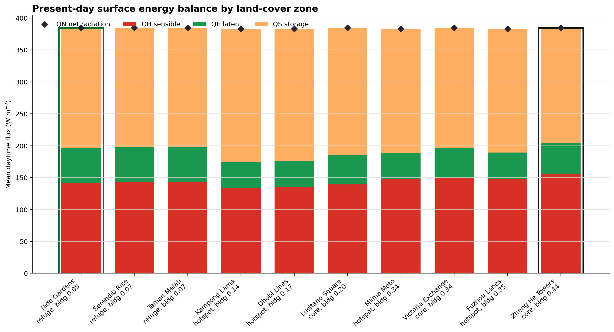
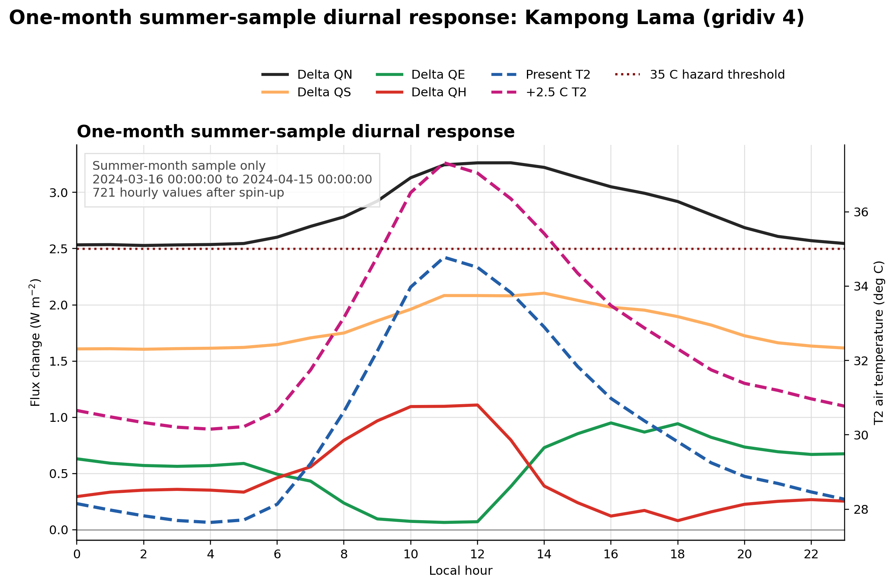
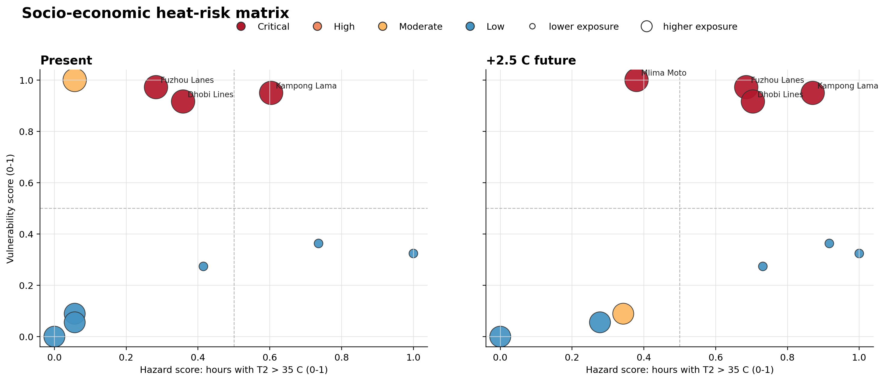

SUEWS / SuPy Urban Climate Dashboard
UDA-city Heat Hazard and Socio-Economic Risk Report
This report summarises a SUEWS/SuPy analysis for UDA-city, a synthetic, lower-income, hot-humid, Colombo-like city with 10 neighbourhoods. The aim is to separate the physical heat hazard from the socio-economic risk bridge: SUEWS estimates the environmental heat signal, while the risk indicator adds exposure and vulnerability.
The analysis compares the provided present hot-humid forcing with a humidity-preserving +2.5 C future pseudo-warming. Anthropogenic heat (QF) is off in this challenge setup, so population affects exposure and vulnerability only; it does not add heat to the SUEWS energy balance.
1. Executive Summary
- Highest socio-economic risk: Kampong Lama (
gridiv 4) is the highest-risk district in both present and future scenarios because it combines substantial dangerous-heat hours with maximum daytime exposure and very high vulnerability. - Critical present-day risk: Kampong Lama, Dhobi Lines, and Fuzhou Lanes are already critical-risk hotspot districts under the reference bridge.
- Critical future risk: Under +2.5 C pseudo-warming, Mlima Moto also becomes critical risk, giving four critical hotspot districts.
- Hottest does not mean highest risk: Jade Gardens, Taman Melati, and Serendib Rise have many dangerous heat hours, but their daytime population density is the lowest in the dataset. With min-max exposure scaling, their aggregate risk score falls to zero. This is a feature and a limitation of the chosen relative indicator.
- Seasonal scope: The saved hourly analysis output is a one-month summer sample, not a full summer-season estimate:
2024-03-16 00:00to2024-04-15 00:00, giving 721 hourly values per scenario and neighbourhood. Other months/seasons and the rest of summer are not present in the current output. - Science interpretation: The model is strongest for comparing land-cover and morphology effects on outdoor heat and energy partitioning. It does not represent behaviour, health outcomes, indoor exposure, adaptive action, or AC feedback unless those processes are added explicitly.
2. Urban Heat Hazard Analysis
Model Setup and Analysis Window
The SUEWS configuration is uda-city.yml, applied to all 10 neighbourhoods. Neighbourhood differences come from land-cover fractions, building form, and socio-economic data. Meteorology is shared across districts.
| Item | Value |
|---|---|
| Model city | UDA-city synthetic hot-humid city |
| Scenarios | Present hot-humid; +2.5 C future pseudo-warming |
| Spin-up discarded | 14 days |
| Analysis period used here | One-month summer sample: 2024-03-16 to 2024-04-15 |
| Analysis hours per scenario/neighbourhood | 721 |
| Hazard metric | Count of hourly mean T2 > 35 C after spin-up |
| Risk bridge exposure | Daytime population density |
| Risk bridge vulnerability | Over-65, under-5, lack of AC, outdoor work, deprivation |
The raw forcing files extend from day-of-year 62 to 153 in 2024, but this practice analysis used a compact run to stay within desktop memory limits. The results should therefore be read as a one-month summer sample / stress-test window, not as a representative average for the whole summer season. The seasonal coverage file confirms that only this summer-labeled one-month window is present after spin-up.
Urban Form Contrast
The model separates three broad neighbourhood types: lower-density refuges, dense hotspots, and urban cores. The two strongest land-cover contrasts are:
| Contrast | District | Type | Building fraction | Green-blue fraction | Impervious fraction | Day population density |
|---|---|---|---|---|---|---|
| Most vegetated/refuge | Jade Gardens | refuge | 0.047 | 0.26 | 0.64 | 80 |
| Most built-up core | Zheng He Towers | core | 0.440 | 0.15 | 0.80 | 250 |
| Highest risk district | Kampong Lama | hotspot | 0.140 | 0.07 | 0.85 | 300 |
This contrast matters because the SUEWS energy balance closes through QN + QF = QS + QE + QH. With QF = 0, the surface mix controls how net radiation (QN) is partitioned into storage heat (QS), latent heat (QE), and sensible heat (QH).
Surface Energy Balance

The energy-balance plot shows present-day daytime means sorted by building fraction. Built-up/core districts generally store more heat and have a smaller latent heat fraction than the most vegetated refuges. The most built-up core, Zheng He Towers, has the largest mean sensible heat flux in this summary (QH = 155.8 W m-2), but it is not the highest socio-economic risk district because its vulnerability is comparatively low.
Heat Hazard by District
Dangerous heat hours are counted from hourly mean T2 > 35 C after spin-up. The +2.5 C scenario increases dangerous heat hours in every district.
| District | Type | Present heat hours | Future heat hours | Present max T2 (C) | Future max T2 (C) |
|---|---|---|---|---|---|
| Jade Gardens | refuge | 55 | 167 | 39.96 | 42.51 |
| Taman Melati | refuge | 41 | 158 | 39.59 | 42.13 |
| Kampong Lama | hotspot | 34 | 153 | 37.98 | 40.52 |
| Serendib Rise | refuge | 24 | 138 | 38.62 | 41.16 |
| Dhobi Lines | hotspot | 21 | 135 | 37.48 | 40.02 |
| Fuzhou Lanes | hotspot | 17 | 133 | 37.29 | 39.82 |
| Mlima Moto | hotspot | 5 | 100 | 36.20 | 38.71 |
| Lusitano Square | core | 5 | 96 | 36.25 | 38.77 |
| Victoria Exchange | core | 5 | 89 | 36.02 | 38.53 |
| Zheng He Towers | core | 2 | 59 | 35.12 | 37.63 |
The table illustrates the main hazard-risk tension. The refuge neighbourhoods are physically hot in the SUEWS output, but the densest and most deprived hotspot districts become most important after exposure and vulnerability are added.
High-Risk One-Month Summer Diurnal Context

For Kampong Lama, the one-month summer-sample diurnal plot keeps T2 as absolute present and future scenario air temperature while showing heat-flux changes as point-by-point future - present differences. The dotted line is the same 35 C hazard threshold used in the risk bridge. This plot is useful as context: it shows when the +2.5 C scenario crosses the dangerous-heat threshold within this month and how the energy-balance terms adjust. It is not itself the risk indicator and should not be read as a full-season summer climatology.
3. Socio-Economic Risk Translation Matrix
The bridge follows the reference in bridge/heat-to-risk.md:
where:
hazardis dangerous heat hours (T2 > 35 C) scaled to [0, 1],exposureis daytime population density scaled to [0, 1],vulnerabilitycombines age, lack of AC, outdoor work, and deprivation, then is scaled to [0, 1].
Risk Level Rules
For presentation, risk levels are classified as:
| Risk level | Rule |
|---|---|
| Critical | risk_index >= 0.75 |
| High | risk_index >= 0.50 |
| Moderate | risk_index >= 0.25 |
| Low | risk_index < 0.25 |
Risk Matrix Plot

The matrix plot places hazard on the x-axis and vulnerability on the y-axis. Bubble size represents exposure. Red bubbles are critical risk. This makes the translation visible: districts with high exposure and high vulnerability can become critical even when they are not the physically hottest districts.
Risk Translation Matrix Table
| Scenario | District | Type | Heat hours | Hazard | Exposure | Vulnerability | Risk index | Risk level |
|---|---|---|---|---|---|---|---|---|
| Present | Kampong Lama | hotspot | 34 | 0.60 | 1.00 | 0.95 | 1.00 | Critical |
| Present | Dhobi Lines | hotspot | 21 | 0.36 | 1.00 | 0.92 | 0.83 | Critical |
| Present | Fuzhou Lanes | hotspot | 17 | 0.28 | 1.00 | 0.97 | 0.78 | Critical |
| Present | Mlima Moto | hotspot | 5 | 0.06 | 1.00 | 1.00 | 0.46 | Moderate |
| Present | Lusitano Square | core | 5 | 0.06 | 0.77 | 0.09 | 0.19 | Low |
| Present | Victoria Exchange | core | 5 | 0.06 | 0.77 | 0.06 | 0.16 | Low |
| Present | Jade Gardens | refuge | 55 | 1.00 | 0.00 | 0.32 | 0.00 | Low |
| Present | Serendib Rise | refuge | 24 | 0.42 | 0.00 | 0.27 | 0.00 | Low |
| Present | Taman Melati | refuge | 41 | 0.74 | 0.00 | 0.36 | 0.00 | Low |
| Present | Zheng He Towers | core | 2 | 0.00 | 0.77 | 0.00 | 0.00 | Low |
| +2.5 C future | Kampong Lama | hotspot | 153 | 0.87 | 1.00 | 0.95 | 1.00 | Critical |
| +2.5 C future | Fuzhou Lanes | hotspot | 133 | 0.69 | 1.00 | 0.97 | 0.93 | Critical |
| +2.5 C future | Dhobi Lines | hotspot | 135 | 0.70 | 1.00 | 0.92 | 0.92 | Critical |
| +2.5 C future | Mlima Moto | hotspot | 100 | 0.38 | 1.00 | 1.00 | 0.77 | Critical |
| +2.5 C future | Lusitano Square | core | 96 | 0.34 | 0.77 | 0.09 | 0.31 | Moderate |
| +2.5 C future | Victoria Exchange | core | 89 | 0.28 | 0.77 | 0.06 | 0.24 | Low |
| +2.5 C future | Jade Gardens | refuge | 167 | 1.00 | 0.00 | 0.32 | 0.00 | Low |
| +2.5 C future | Serendib Rise | refuge | 138 | 0.73 | 0.00 | 0.27 | 0.00 | Low |
| +2.5 C future | Taman Melati | refuge | 158 | 0.92 | 0.00 | 0.36 | 0.00 | Low |
| +2.5 C future | Zheng He Towers | core | 59 | 0.00 | 0.77 | 0.00 | 0.00 | Low |
Critical Risk Districts
| Scenario | Critical districts | Interpretation |
|---|---|---|
| Present | Kampong Lama; Dhobi Lines; Fuzhou Lanes | Critical risk is already concentrated in hotspot districts with high exposure and high vulnerability. |
| +2.5 C future | Kampong Lama; Fuzhou Lanes; Dhobi Lines; Mlima Moto | The hotter scenario expands critical risk to all hotspot districts in the dataset. |
The highest immediate priorities are therefore the hotspot districts, especially Kampong Lama. Mlima Moto is a clear future-warning district: its present hazard is low relative to the other hotspots, but its exposure and vulnerability are maximal, so it crosses into critical risk under pseudo-warming.
Interpretation and Synthesis
The risk matrix changes the story from "where is the air hottest?" to "where do dangerous heat, people, and vulnerability coincide?" On pure hazard, the refuge neighbourhoods Jade Gardens and Taman Melati record the most dangerous heat hours. After the bridge adds exposure and vulnerability, they are not the top priority because their daytime population density is the dataset minimum. This does not mean they are safe; it means this relative, neighbourhood-average indicator is not designed to identify isolated vulnerable people in low-density areas.
The most consistent risk signal is the hotspot group. Kampong Lama, Dhobi Lines, and Fuzhou Lanes are critical now and remain critical in the +2.5 C scenario. Mlima Moto is the strongest emerging concern: it has only five present-day dangerous heat hours, but its exposure and vulnerability are both at the maximum of the dataset, so future warming pushes it into critical risk. The core districts have substantial exposure but lower vulnerability, so their risk remains low to moderate in this bridge. The practical synthesis is that heat-response planning should prioritise the hotspot districts first, while using the high-hazard refuge results as a reminder to investigate local pockets of vulnerability that the aggregated index may hide.
4. Honest Bridging: Where the Science Holds and Where It Breaks
Where SUEWS Holds Beautifully
SUEWS is well suited to the physical part of this task: translating neighbourhood form, surface cover, and meteorological forcing into outdoor heat and surface energy-balance terms. It gives an internally consistent account of how QN, QS, QE, and QH change under a hotter forcing scenario, and it lets us compare neighbourhoods under the same meteorology. That is exactly the kind of controlled contrast needed for this hackathon.
The model also helps avoid a common mistake: treating "most built-up" and "highest risk" as the same thing. In this run, the most built-up core is Zheng He Towers, but the highest risk district is Kampong Lama. The physics output and the socio-economic bridge together show why: morphology shapes hazard, but people and vulnerability shape risk.
Where the Bridge Is Useful
The risk bridge is useful because it keeps the three pillars visible:
- Hazard: dangerous outdoor heat from SUEWS,
- Exposure: how many people are in the affected district during the day,
- Vulnerability: who is less able to avoid or cope with heat.
The geometric mean is a conservative choice. If any pillar is near zero, the combined risk falls. This prevents a low-population district from automatically becoming the top priority just because it is physically hot.
Where the Bridge Breaks
This bridge is not a health-impact model. It does not predict mortality, morbidity, hospital admissions, productivity loss, school disruption, or household-level harm. It is a structured screening index.
Important missing processes include:
- Human behavioural adaptation: people change routes, shift work hours, seek shade, drink water, rest, or visit cooling spaces. The risk index cannot see those responses.
- Indoor exposure: SUEWS gives an outdoor environmental hazard. People spend much of the day indoors, and indoor heat depends on building design, ventilation, roof materials, occupancy, and appliance heat.
- Air-conditioning feedback: lack of AC is used as a vulnerability proxy, but AC use itself can add waste heat outdoors and change electricity demand. In this run
QFis off, so that feedback is not represented. - Humidity and health limits: the hazard metric uses dry-bulb
T2 > 35 C. UDA-city is hot-humid, so apparent temperature, wet-bulb temperature, or humid-heat stress could be more policy-relevant than dry-bulb air temperature alone. - Relative scaling: min-max scores are relative to these 10 neighbourhoods. A risk score of zero does not mean "safe"; it means lowest relative score in this dataset under this specific bridge.
- Aggregation: neighbourhood averages hide individual exposure, age, health, housing quality, occupation, and social support.
- Scenario framing: the +2.5 C future is a pseudo-warming stress test, not a downscaled climate projection.
Practical Reading
The safest policy reading is:
- Use the SUEWS outputs to identify when and where outdoor heat hazard rises.
- Use the bridge to prioritise districts where heat overlaps with high exposure and vulnerability.
- Treat the critical-risk districts as places for further investigation, not as final proof of health outcomes.
- Extend the bridge with humid-heat metrics, indoor exposure, behavioural adaptation, and AC/waste-heat feedback before using it for operational health planning.
Data Products
- Hourly QH, QE, QN, QS, and T2 for present and +2.5 C runs
- Socio-economic heat-risk matrix
- Critical heat-risk zones
- Risk-zone ranking
- Land-cover zone summary
- Present-day energy-balance summary
- Meteorology summary
- Summer point-by-point high-risk-zone heat-flux deltas
- Summer diurnal high-risk-zone heat-flux deltas
- Summer diurnal high-risk-zone T2 curves
- Seasonal data coverage check
- Prompt history and AI collaboration evidence
Formal Citations
Järvi, L., Grimmond, C. S. B., & Christen, A. (2011). The Surface Urban Energy and Water Balance Scheme (SUEWS): Evaluation in Los Angeles and Vancouver. Journal of Hydrology, 411(3-4), 219-237. https://doi.org/10.1016/j.jhydrol.2011.10.001
Ward, H. C., Kotthaus, S., Järvi, L., & Grimmond, C. S. B. (2016). Surface Urban Energy and Water Balance Scheme (SUEWS): Development and evaluation at two UK sites. Urban Climate, 18, 1-32. https://doi.org/10.1016/j.uclim.2016.05.001